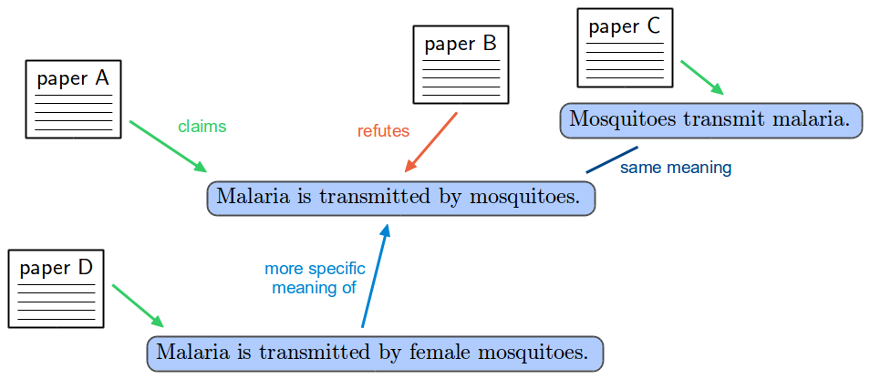
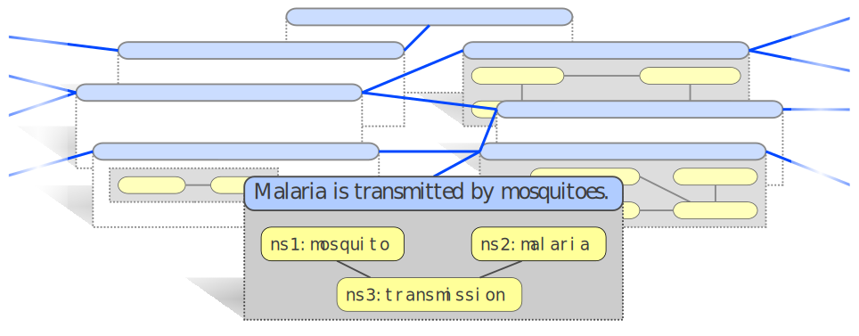

Using the AIDA Language to Formally Organize Scientific Claims
Tobias Kuhn
Sixth International Workshop on Controlled Natural Language (CNL 2018)
Maynooth, Ireland
27 August 2018
Scientific Papers:
Optimized for Reading Single Work

Scientific Papers:
Bad for Getting More General View

Scientific Papers:
Unused Potential of Software/Databases

We Have: Network of Publications

typical edge: paper cites paper
We Need: Network of Results
typical edge: study supports hypothesis
We Need: Network of Knowledge
typical edge: gene causes disease
How can we Get such Networks of Results and Knowledge?
Communicating scientific findings in a way that
- allows for machine-interpretable representations (as compared to narrative papers in English)
- is general (i.e. applies to all of science, and possibly beyond)
- is simple and intuitive (i.e. doesn't require a background in formal methods to be used)
- is flexible in the sense that formal, semi-formal, and informal statements are supported
AIDA Approach
We introduced the approach of AIDA Sentences in earlier work:
- Controlled Natural Language
- English sentences that are Atomic, Independent, Declarative, and Absolute
- PENS type: P2E5N4S1
AIDA Sentence: Definition
- Atomic: a sentence describing one thought that cannot be further broken down in a practical way
- Independent: a sentence that can stand on its own, without external references like "this effect" or "we"
- Declarative: a complete sentence ending with a full stop that could (at least in theory) be true or false
- Absolute: a sentence describing the core of a claim ignoring the (un)certainty about its truth and ignoring how it was discovered (without phrases such as "probably" or "evaluation showed that"
AIDA Sentences: Examples
"A combination of system and searcher biases lead search engine users to settle on the incorrect answer to yes/no-questions around half of the time."(from 10.1145/2484028.2484053)
"Teenagers reply on average faster to emails than adults.''
(from 10.1145/2736277.2741130)
"Deep learning is a powerful and accurate method for automatic speech recognition.''
(from 10.1109/ASRU.2011.6163930, 10.1109/MSP.2012.2205597, and 10.1109/ICASSP.2013.6639347)
AIDA Sentences
Informal, Semi-formal, Formal

Linking Informal, Semi-formal, and Formal Statements
Related Controlled Natural Languages
...
AIDA is unique as a CNL for knowledge representation that focuses on expressivity instead of precision.
Previous Work
...Data: 659 AIDA Sentences
Previous work:
- Manual extraction study: 51 AIDA sentences
- Automatic extraction study: 189 AIDA sentences
Case studies:
- Alzheimer's: 62 AIDA sentences
- Open Access: 70 AIDA sentences
Personal collection:
Alzheimer's Case Study

Open Access Case Study
...User Study
...User Study Questions
1. AIDA Sentences: Were the AIDA sentences, as presented during the lectures and on the slides, helpful for you to understand and remember the content of the papers?
- Yes, the AIDA sentences were helpful.
- Maybe. I am not sure whether the AIDA sentences were helpful.
- No, the AIDA sentences were not helpful.
2. AIDA sentences compared to classical text summaries: Did you find the AIDA sentences, as presented during the lectures and on the slides, to be more or less useful than classical text summaries?
- I found the AIDA sentences to be more useful than classical text summaries.
- I found the AIDA sentences to be about as useful as classical text summaries.
- I found the AIDA sentences to be less useful than classical text summaries.
User Study Results
Linking and Network Study
...Network of AIDA Sentences and Papers

332 network components: largest covers 10%
Network of AIDA Sentences, Papers, and Existing Concepts
167 network components: largest covers 24%
Network of AIDA Sentences, Papers, and Concepts, with DBpedia Spotlight Links

66 network components: largest covers 48%